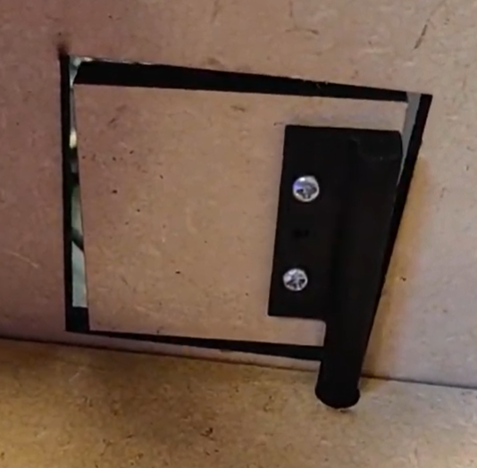

Hackathon Project
The theme of the escape room is a Haunted Castle with several mini model rooms. The goal of the escape room is to solve the puzzle in each room and thus open the door to the next room. Once the last room has been solved, a laser starts in the first room that must be used to use mirrors to dispel the ghost in the last room and thus escape from the castle. However, the ghosts are after you and you only have 10 minutes to solve the entire escape room!
An LED strip is used in each room to indicate the status of the room:
- Disabled: the room is inactive, the previous rooms must be finished first.
- Blue: the game is active in the room.
- Green: the room has been solved successfully.
- Red: a mistake was made by the player, this is only temporarily red.
To indicate to the player the room has been solved, in each room a door will open controlled by a servo motor. The servo motor is mounted to a wooden plate using a 3D printed piece.
Control Room
This room was designed by Maarten Van Neyghem.
The control room is the most central room in the castle. This room is used to start/stop the game, this room can also play sounds or display a timer.
Communication between the control room and the other rooms
Each puzzle/room has its own Arduino UNO. These Arduinos are all connected to an Arduino Mega in the control room via a Serial connection. Since an Arduino Mega has 4 Serial connection ports (Serial, Serial1, Serial2, Serial3), hardware serial can be used everywhere. This is necessary as Software Serial has some limitations that make programming a lot more difficult.
These serial connections can be used to forward commands to and from the control rooms. This is a big advantage over, for example, a simpler solution via a HIGH/LOW pin.
The connecting wires are hidden through holes in between the different rooms.
Some commands are:
- Control -> Room: Start the room (g:start)
- Control -> Room: The timer has ended (g:lose)
- Control -> Room: The complete game has been solved (g:win)
- Control -> Room: Reset for the next game (g:reset)
- Room -> Control: This room is solved (g:complete)
- Room -> Control: Play a sound (g:sound:<index>)
The use of these commands has been completely abstracted away from the programmers. All communication is done via 2 self-written libraries that contain a number of function calls and callback functions to easily send and receive commands.
Play sound
Playing audio files can be done via a DFPlayer. This DFPlayer plays MP3 files from an SD card. However, we've noticed that buffering causes audio playback to have a slight delay, sometimes causing the sound to be out of sync with the operations.
Hardware
- 1x 4-digits 7-segment display
- 1x DFPlayer
- 2x Speakers
- 1x Start button
- 1x Arduino Mega
Room 1
This room was designed by Simon Devisch.
Concept
In the first room you play the game "Simon Says". Here you will see an LED pattern and you have to replicate the pattern in the correct order each time. In each level of this puzzle, one more color is added to the pattern. If you make a mistake you have to start over!
Hardware
This puzzle includes following components:
- 4x Push buttons (red, yellow, green, blue)
- 4x LEDs (red, yellow, green, blue)
- 1x RGB LED-Strip
- 1x Servo
- 1x Laser
- 1x Arduino UNO
Scheme

Room 2
This room was designed by Mathias De Jaeger.
Concept
In the second room you get an anagram of different letters on an LCD display. The idea is for you to decipher the anagram and use a dial on a potentiometer to relay the answer. Moving the button scrolls through the alphabet. With a white button you confirm a character and with a red button you confirm the answer. The LCD will then tell you whether your answer is correct or incorrect.
Hardware
This puzzle includes following components:
- 1x LCD-display
- 2x Push buttons
- 1x Potentiometer (50kOhm)
- 1x RGB LED-Strip
- 1x Servo
- 1x Arduino UNO
Scheme

Room 3
This room was designed by Maarten Van Neyghem.
Hardware
This puzzle includes following components
- 1x LED matrix
- 1x IR receiver sensor
- 1x RGB LED-Strip
- 1x Servo
- 1x Arduino UNO
Scheme
Room 4
Designed by Anthony Tacquet

Concept
This is the last room, if you can solve this puzzle you will get access to the laser and you can chase the ghost from the castle. A number of people were murdered in this room and their ghosts still haunt this room. Place the ghosts' name tags in the floor in the correct location, using a messy floor, to activate the laser, then use the mirrors in each room to destroy the ghost!
Hardware
This puzzle includes the following components:
- 4x Micro switches
- 1x Light sensor
- 1x RGB-Strip
- 1x Arduino UNO
Since this is the last room, there is no servo to open a door. The game is successfully solved when the player can aim the laser at the light sensor.
Scheme

External Libraries
- madleech/Button@^1.0.0
- seeed-studio/Grove 4-Digit Display@^1.0.0
- powerbroker2/FireTimer@^1.0.5
- dfrobo/DFRobotDFPlayerMini@^1.0.5
- z3t0/IRremote@^3.6.1
- arduino-libraries/Servo@^1.1.8
- wayoda/LedControl@^1.0.6
- marcoschwartz/LiquidCrystal_I2C@^1.1.4